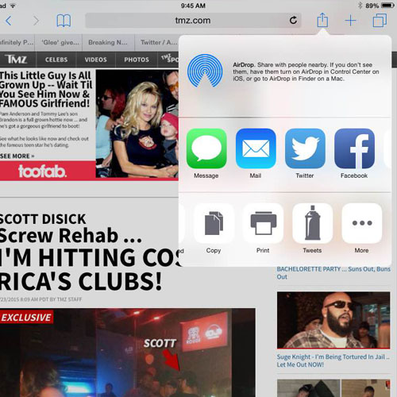
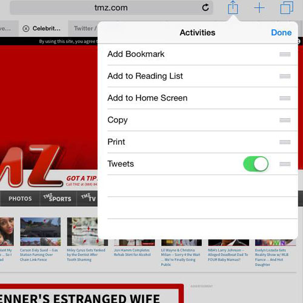

Step 1:
Click the Install link, install at the app store, then open application on your IOS device and login to Twitter.

Step 2:
Go into settings on your IOS device and go to Twitter and allow the TTAGIT application.

Step 3:
Open up Safari and head to your favourite webpage, click the share icon and find the TTAGIT action extension and open the application and start Tweeting.